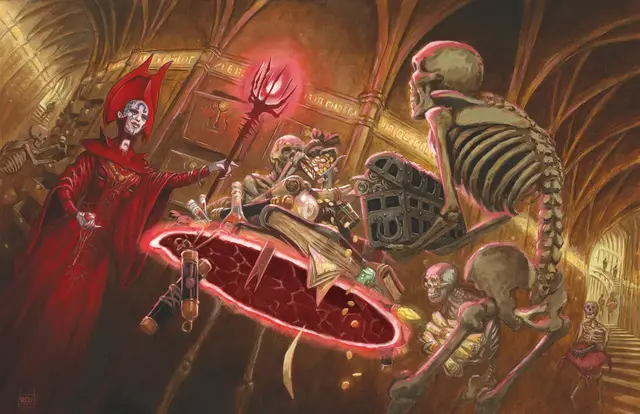

Тензеров парящий диск
Tenser’s Floating Disk
1 уровень, Вызов (ритуал)

Время сотворения 1 действие
Дистанция 30 футов
Компоненты В, С, М (капля ртути)
Длительность 1 час
Классы Волшебник
Это заклинание создает круглый горизонтальный диск из силового поля диаметром 3 фута и толщиной 1 дюйм (2,5 см), парящий в 3 футах над полом в свободном пространстве на ваш выбор, видимом в пределах дистанции. Диск существует, пока заклинание активно, и может вынести на себе 500 фунтов. Если на него поместить больший вес, заклинание окончится, и все, что было на диске, падает на пол.
Диск неподвижен, пока вы находитесь в пределах 20 футов от него. Если вы переместитесь от него на расстояние, превышающее 20 футов, диск следует за вами, оставаясь в пределах 20 футов. Он может перелетать по неровной поверхности, перемещаться по лестницам, склонам и подобным препятствиям, но не может пересекать перепады по высоте в 10 футов и более. Например, диск не сможет перелететь над 10-футовой ямой, и не сможет из неё выбраться, если будет создан на её дне.
Если вы переместитесь более чем на 100 футов от диска (например, если он из-за препятствия не сможет последовать за вами), заклинание оканчивается.